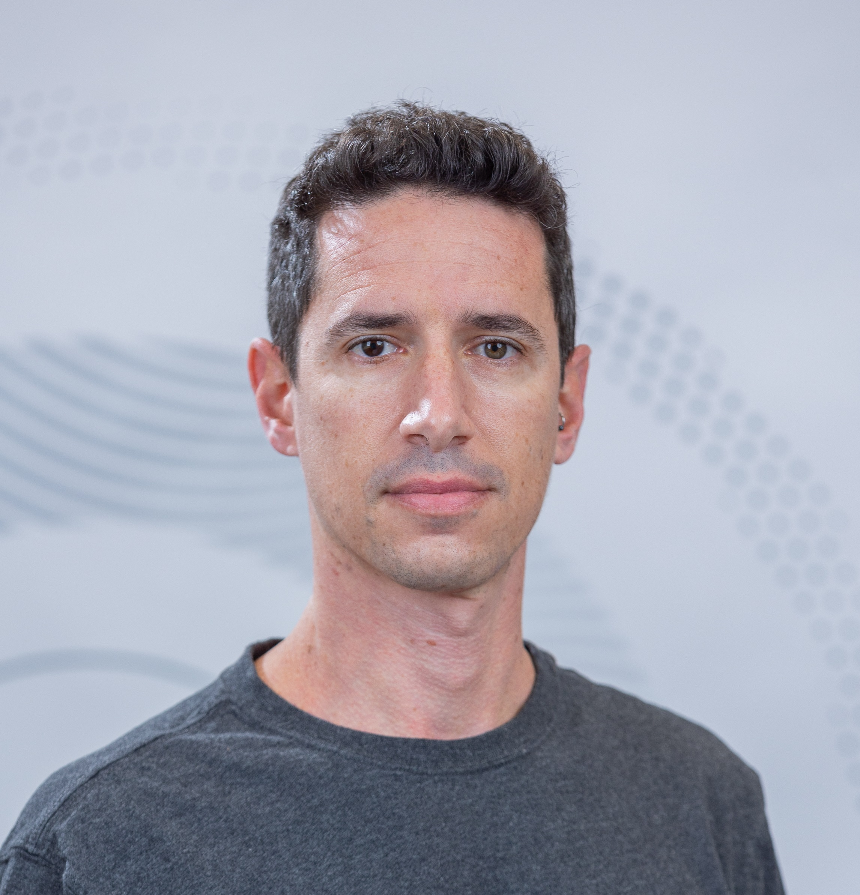
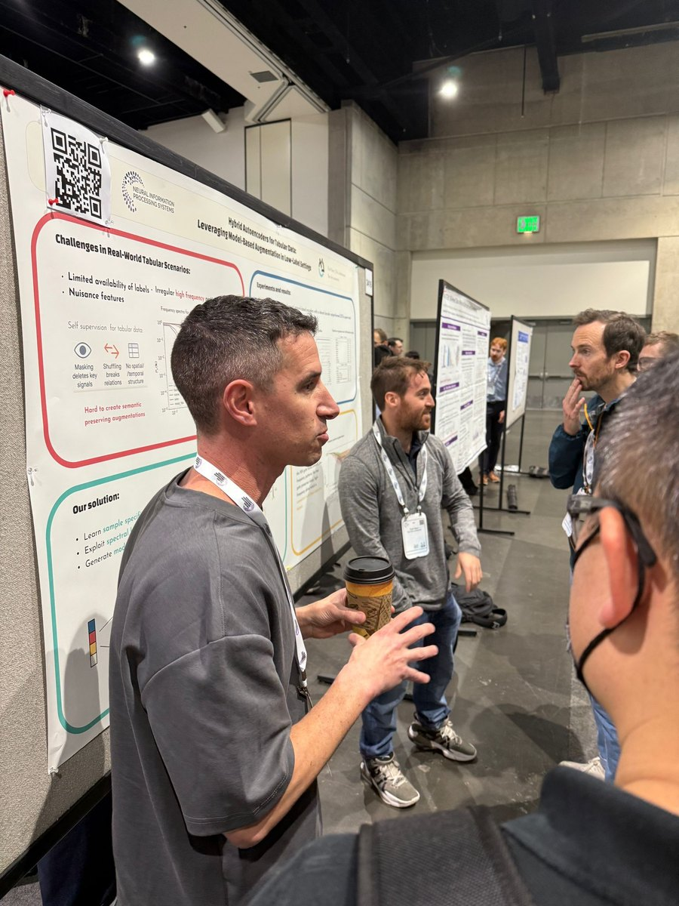
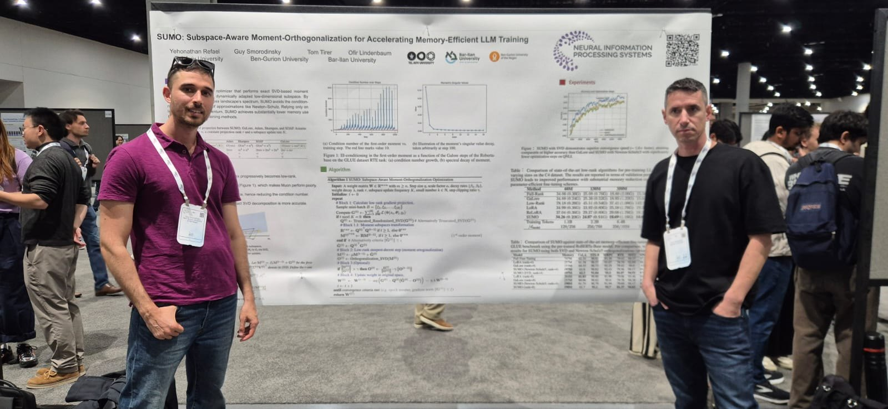
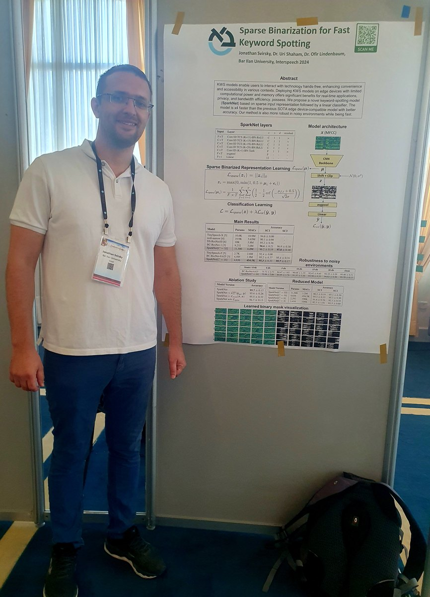

Machine learning for tabular scientific data
Ofir Lindenbaum
I develop machine learning methods for tabular data, efficient AI, interpretable models, and scientific discovery.
Google Scholar · DBLP · ORCID

Welcome
I am Ofir Lindenbaum, an Assistant Professor at the Alexander Kofkin Faculty of Engineering, Bar-Ilan University.
My research focuses on machine learning for tabular and scientific data. I develop methods for efficient AI, representation learning, computational biology, signal processing, audio analysis, manifold learning, spectral methods for data mining, and dimensionality reduction, with an emphasis on structured, heterogeneous, and low-label data.
Before joining Bar-Ilan University, I completed a postdoctoral fellowship in applied mathematics at Yale University and a Ph.D. in Electrical Engineering at Tel Aviv University.
Short Bio
Ofir Lindenbaum is an Assistant Professor in the Alexander Kofkin Faculty of Engineering at Bar-Ilan University. His lab develops machine learning methods for tabular and scientific data, with emphasis on efficient training, interpretable feature selection, representation learning, multimodal learning, signal and audio analysis, and computational biology.
Talks & Videos
Selected talks, interviews, and research videos.


From the Lab


